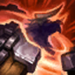

起手裝備
 遺跡之盾
遺跡之盾

錫柯與聖光配合開大後的近身控制；第三件改新版日輪，300生命及雙防加上主動盾，比繼續堆進攻觸發更能保住跟進隊友。騎士維持單核保護。 五成裝為四件購買裝＋進化任務裝，鞋獨立；三級鞋按經濟補，不把外站附魔搬進本站。


五件成裝與鞋子分開列示；起手與核心是購買路線，不是額外佔用的成裝欄位。鞋子完成時機仍依對線壓力與回城金錢調整。


控制命中即可取得巨像勇氣護盾，取代需持續承傷的堅定壁壘；海克斯閃現保留草叢先手。


保留閃現＋點燃配合控制集火；若改保排可在選角以虛弱替點燃，不在對局中換技能。
加點優先：Q > W > E
Q > W > E；二級才有二一，E疊滿後仍須普攻打出暈眩。
被動勝利怒吼的精確自動觸發條件仍有來源差異，僅此項待確認；治療效果與控制縮短剩餘冷卻10秒已有官方公告依據。
治療自身與附近友軍英雄；以技能暈眩或位移敵方英雄，會使被動剩餘冷卻縮短10秒。治療有觸發冷卻，不是每次受傷都能立即回復。
手機版專用資料記載在受傷／缺血時依冷卻自動治療；官方英雄簡介則寫成控制或鄰近敵人死亡累積充能。兩者仍有描述差異，因此不把其中一套觸發條件寫成已實測定論。
局部待確認：現行手機版自動觸發是否僅判定自身受傷，或也包含鄰近友軍缺血。官方3.2a確認的治療效果及控制縮短冷卻10秒不受此項爭議影響。
猛擊地面，對附近敵人造成魔法傷害並擊飛。可接在野蠻衝撞途中形成穩定遠距控制，也能閃現反開。
衝向一名敵人，造成魔法傷害並將其擊退。施放途中接大地粉碎可取消擊退，改為把目標留在原地附近擊飛。
踐踏附近敵人並忽略單位碰撞，命中英雄會累積層數；疊滿後下一次對英雄的普攻造成額外魔法傷害並暈眩。

解除自身控制效果，並在持續期間大幅降低所受傷害。適合進場後承受集火，或在關鍵控制命中時立即解開。
官方3.2a列治療值調整及每次控制縮短冷卻8→10秒，與現行手機版專用攻略的控制減冷卻機制相符。摘要補上10秒並明確不是每次受傷即治療。 官方英雄介紹採充能敘述，手機版專用攻略寫受傷觸發，WR資料模板寫自身或附近友軍缺血時按冷卻治療；缺少可排除這項差異的當前實機記錄。此項僅標記於被動，不影響本站正式配置與評級。
2技衝向目標 → 途中接1技擊飛 → 3技開始疊層 → 疊滿後強化普攻暈眩 → 點燃壓制回復
一技必須在二技衝刺途中按下，才能避免把目標推遠。進場前確認隊友能跟上。
閃現進入敵群 → 1技擊飛多人 → 2技把核心推向隊伍 → 3技疊層 → 4技解控減傷
先閃現擊飛多人，再把關鍵目標推向隊友。大絕可等敵方控制或爆發落下時再開。
1技近距離擊飛 → 2技把目標推向己方塔 → 3技持續踩踏 → 強化普攻暈眩 → 4技扛塔或解控
敵人越過兵線時先擊飛再推回，避免直接二技把對手送離防禦塔與隊友火力。
野蠻衝撞途中施放大地粉碎，可以取消原本的擊退並把目標在落點附近擊飛，是最穩定的先手連段。
野蠻衝撞可能把敵人推離己方輸出。靠牆、塔下或繞後時可用來回推，正面團戰則要避免救走目標。
堅定意志可解除控制並大幅降低傷害。等敵方關鍵控制或爆發命中後再開，通常比進場前提早開啟更有價值。
二級後可用野蠻衝撞接大地粉碎完成遠距離擊飛連段，但每次進場前要先確認射手與兵線位置。對手靠近己方防禦塔時，也可先大地粉碎再用野蠻衝撞把人推回。蠻牛之力疊滿後的強化普攻會暈眩，換血時要貼近目標持續踩踏。
錫柯的聚合之力 → 聖光美德 → 日輪的加冕 → 騎士誓願。錫柯與聖光配合開大後的近身控制；第三件改新版日輪，300生命及雙防加上主動盾，比繼續堆進攻觸發更能保住跟進隊友。騎士維持單核保護。 群山堡壘由起手任務裝進化，保留占位；二級鞋依對線補，三級鞋不延後必要功能裝。
團戰可以閃現大地粉碎開多人，也可以留在主力身旁把突進者頂走。野蠻衝撞有時會把敵人救離隊友火力，因此要先確認推動方向；若只需要控制，優先使用連段擊飛或強化普攻暈眩。大絕期間可承擔大量火力，但時間結束前要開始撤退。
珍娜反開會拆掉二一，魔甘娜黑盾要先逼出；與犽宿、煞蜜拉合作時，先確認隊友距離再擊飛。
對局名單是機制與分路判斷，不代表固定勝率；需同時看雙方熟練度、兵線與陣容。
珍娜反開會拆掉二一，魔甘娜黑盾要先逼出；與犽宿、煞蜜拉合作時，先確認隊友距離再擊飛。
威脅名單是攻略與技能互動，實際需看雙方射手、技能冷卻和兵線；不代表台服勝率排名。
完整成裝為四件購買裝＋一件進化任務裝；鞋獨立。以下以本頁預設為基準，變體需重新檢查同名裝及功能缺口。
依陣容
觸發：敵方暴擊普攻成為主傷害時。
騎士誓願 → 蘭頓之兆
敵方暴擊普攻成為主傷害時。
蘭頓針對暴擊；若是高頻非暴擊普攻，可選冰霜之心替代同一格。
換掉原功能前先確認隊友能補足；替換不是第六件成裝。
依陣容
觸發：敵方法傷持續壓低血量、妨礙第二輪控制。
騎士誓願 → 自然之力
敵方法傷持續壓低血量、妨礙第二輪控制。
自然之力補持續魔防；魔法威脅優先時可前移購買順序。
換掉原功能前先確認隊友能補足；替換不是第六件成裝。
依陣容
觸發：敵方治療或吸血使集火失敗。
騎士誓願 → 荊棘之甲
敵方治療或吸血使集火失敗。
荊棘7.3b總價2850，先按需買刺藤胸甲，確認自身能觸發重創；不要無條件先合。
換掉原功能前先確認隊友能補足；替換不是第六件成裝。
依陣容
觸發：敵方範圍爆發要在短時間內接住。
預設已包含日輪的加冕，保留並依威脅提前，不再買第二件。
換掉原功能前先確認隊友能補足；替換不是第六件成裝。
依陣容
觸發：主要威脅靠持續高頻普攻且可接近其作用範圍。
騎士誓願 → 冰霜之心
主要威脅靠持續高頻普攻且可接近其作用範圍。
冰霜之心補護甲與減攻速；它沒有生命，不算入好戰1250門檻。
換掉原功能前先確認隊友能補足；替換不是第六件成裝。
依對線
觸發：可被韌性縮短的控制或主要魔法威脅。
鍍板鋼蓋 → 水星之靴
整條鞋線一起替換；先二級鞋，三級視經濟補。
不買第二雙鞋；主動裝仍占裝備格，不搬外站附魔。
裝甲戰靴 → 鎖鏈軍靴
整條鞋線一起替換；先二級鞋，三級視經濟補。
不買第二雙鞋；主動裝仍占裝備格，不搬外站附魔。
韌性不能縮短擊飛等所有控制。
對局反覆消耗且能脫離傷害；前三件與已進化群山堡壘完成後才啟動。


錫柯300＋聖光300＋好戰700＋群山175＝1475額外生命，超過1250；好戰不能裸出。若任一血量裝替換，重新計算。
本頁校正版本：7.3b；校正日期：2026-10-15。
參考來源標示版本：7.3b
Tier、出裝、符文與對局是本站編輯建議，不是官方推薦或已驗證台服勝率。v118延續同日v117的逐路複核，針對來源缺口及數值衝突再核對；未宣稱所有技能已在手機內逐級實測。
評級理由：二一開戰與大絕解控仍可靠，但容易被反開拆解；同分路參考為A，維持A。
Riot 官方資料 ↗ · WildRiftFire 參考攻略 ↗ · Riot 官方資料 ↗ · Riot 官方資料 ↗ · wiki.leagueoflegends.com ↗
本頁延續2026/10/15 v117的輔助逐項複核，當前採用7.3b來源；來源只用作配置與機制參考，不等同官方推薦或台服即時勝率。
Riot 官方資料 ↗ · WildRiftFire 參考攻略 ↗ · Riot 官方資料 ↗ · Riot 官方資料 ↗ · wiki.leagueoflegends.com ↗
官方3.2a列治療值調整及每次控制縮短冷卻8→10秒，與現行手機版專用攻略的控制減冷卻機制相符。摘要補上10秒並明確不是每次受傷即治療。
官方英雄介紹採充能敘述，手機版專用攻略寫受傷觸發，WR資料模板寫自身或附近友軍缺血時按冷卻治療；缺少可排除這項差異的當前實機記錄。此項僅標記於被動，不影響本站正式配置與評級。
Riot 官方資料 ↗ · WildRiftFire 參考攻略 ↗ · wiki.leagueoflegends.com ↗
二一開戰與大絕解控仍可靠，但容易被反開拆解；同分路參考為A，維持A。
Riot 官方資料 ↗ · WildRiftFire 參考攻略 ↗ · Riot 官方資料 ↗ · Riot 官方資料 ↗ · wiki.leagueoflegends.com ↗
歷史資料有後續調整時，以較新版本數值為準。
| 項目 | 調整前 | 調整後 |
|---|---|---|
| 基礎生命 | 720 | 700 |
受傷觸發說明與官方英雄簡介的累積充能文字衝突。
官方3.2a公告證實治療與每次控制縮短冷卻10秒；摘要改為這兩項已核實機制，移除每次受傷皆治療的可能誤讀。只有精確自動觸發條件保留本技能局部待確認。
Riot 官方資料 ↗ · Riot 官方資料 ↗ · WildRiftFire 參考攻略 ↗ · wiki.leagueoflegends.com ↗